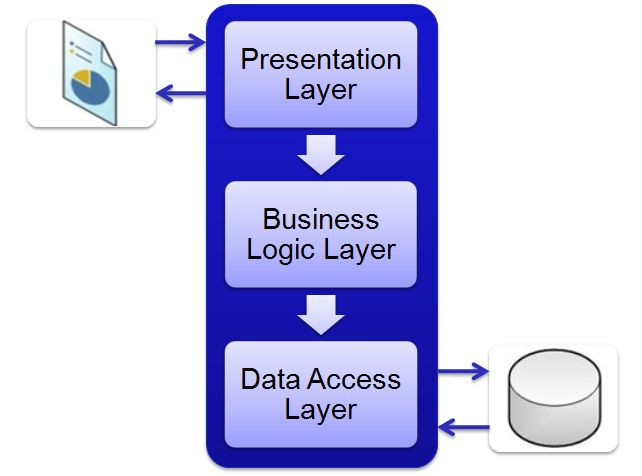

Informatica Website
Homepage
Welkom op mijn site, op deze site krijg je informatie over de werking van een computer. Je krijgt onder ander te weten wat het 3 lagenmodel, Fysieke laag, Logische laag en toepassingen laag is.
3 Lagenmodel.
Het 3 lagen model bestaat uit de fysieke laag, logische laag en toepassingen laag. Door middel van deze verschillende lagen kunnen de hardware en software van een computer samenwerken en de computer laten werken. Specifieke uitleg over wat de lagen doen en waar ze uit bestaan kan je ook op de site vinden.
Fysieke laag
De fysieke laag bestaat veel verschillende dingen, deze dingen noem je de hardware. Hardware zijn alle onderdelen die je met je eigen hand kan aanraken, vandaar ook de naam fysieke laag. Hieronder staan een aantal hardware met uitleg van hun functie.
Logische laag
De logische laag van een apparaat bestaat uit software die ervoor zorgt dat toepassingen op het apparaat uitgevoerd kunnen worden. Deze software maakt het mogelijk om apps en andere software programma’s uit te voeren. De grootste voorbeelden zijn IOS en Android.
Toepassingen laag
Bij een smartphone kun je apps installeren zoals bijvoorbeeld: TikTok, Instagram, Snapchat. Applicaties, ook wel apps, zijn de software waaruit de toepassingen laag bestaat. Denk hierbij aan alle apps die je kunt downloaden in de app- of play store.

Processor en Geheugen.
Processor, kloksnelheid en verwerkingssnelheid
De processor ook wel CPU (Central Processing Unit) genoemd bestuurt eigenlijk heel de computer. De CPU bestaat uit besturingsorgaan en het rekenorgaan.
De kloksnelheid is de hoeveelheid impulsen per seconden gelezen (Hz), geschreven of verwerkt wordt. De kloksnelheid maakt groot deel uit hoe snel de processor werkt. De kloksnelheid hangt af van de klok chip, die een vast aantal malen per seconde (Hz) een puls aan de CPU geeft om de verwerkingsstappen synchroon te laten lopen.
De verwerkingssnelheid ligt altijd lager dan de kloksnelheid, omdat er voor het uitvoeren van iedere instructie meerdere pulsen nodig zijn van de klok chip.
RAM, ROM, permanent geheugen
Het geheugen van een computer bestaat uit RAM, ROM en permanent geheugen.
RAM de afkorting van Random Access Memory en vormt het werkgeheugen van de computer. Hier wordt alle data en alle programma’s tijdelijk opgeslagen. De geheugencellen van het RAM kunnen alleen hun inhoud behouden als ze met hoge frequentie stroomstootjes ontvangen. Het RAM geheugen is daarom ook voor tijdelijke opslag.
ROM de afkorting van Read Only Memory. De geheugencellen uit het ROM behouden, in tegenstelling tot geheugencellen uit het RAM, hun lading ook als de spanning wegvalt. ROM is het geheugen waar de informatie op staat, waarmee de computer geactiveerd kan worden. Deze informatie kan ook niet aangepast worden en blijft ook aanwezig als de stroom uitvalt.
Permanent geheugen is het computergeheugen dat de opgeslagen informatie kan bewaren, ongeacht of de computer is in- of uitgeschakeld. Permanent geheugen wordt daarom ook gebruikt als lange termijn geheugen
https://www.youtube.com/watch?v=p3q5zWCw8J4

Randapperatuur.
Randapparatuur zijn apparaten die deel uitmaken van de computer. Denk hierbij aan het beeldscherm, toetsenbord, muis, microfoon en camera. Alles dat je dus kan aanraken met je eigen handen. Hier nog een video met goede duidelijke uitleg.
https://www.youtube.com/watch?v=M0F4cc2dkV8
Gemaakt door Donny Vlekke